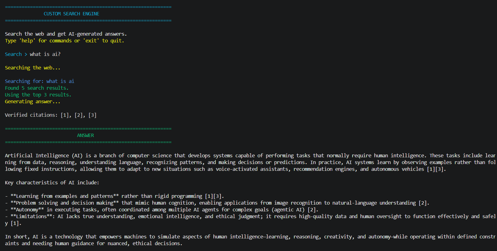
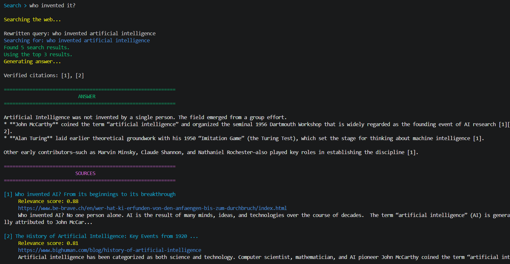

A Python-based AI-powered search engine that retrieves web information, generates concise answers, maintains conversation context, and provides validated source citations.
CompletedCustom Search Engine is a Python-based search application designed to combine web search with AI-generated answers. The system retrieves relevant information from the web, processes and ranks the search results, and then uses an LLM to generate a concise response based on the retrieved sources.
The project follows a Retrieval-Augmented Generation approach. It also supports conversation memory and intelligent query rewriting, allowing follow-up questions to be understood using previous conversation context. The final responses include source citations that are validated against the retrieved search results.
Retrieves relevant information from the web using the Tavily search API.
Uses an LLM to generate concise answers from retrieved search results.
Maintains previous conversation context so follow-up questions can be understood correctly.
Rewrites contextual follow-up questions into standalone search queries.
Filters and ranks search results based on relevance, content quality, duplicate URLs, and query matching.
Checks generated citations against the actual retrieved sources before displaying the answer.
Handles multi-part questions by identifying separate but related search queries when appropriate.
Handles search failures, invalid results, LLM errors, empty responses, and invalid citations gracefully.
The search engine processes a query through multiple stages. The query is first analyzed and combined with conversation context. It can then be rewritten before being sent to Tavily. Retrieved results are filtered and ranked before being passed to the LLM. The generated answer is finally checked for valid citations before being presented to the user.
User Query → Query Analysis → Conversation Context → Query Rewriting → Tavily Search → Result Filtering → Result Ranking → Groq LLM → AI Answer → Citation Validation → Final Answer + Sources
The project includes automated tests using pytest for important components such as query processing, result ranking, citation validation, and conversation handling. This helps verify individual parts of the search pipeline independently.

Search & Query Processing

Sources & Citations
This project helped me understand how a search and retrieval pipeline can be combined with large language models to generate answers from external information. I also gained practical experience with query processing, API integration, result ranking, conversation state, citation validation, error handling, environment variables, and automated testing in Python.